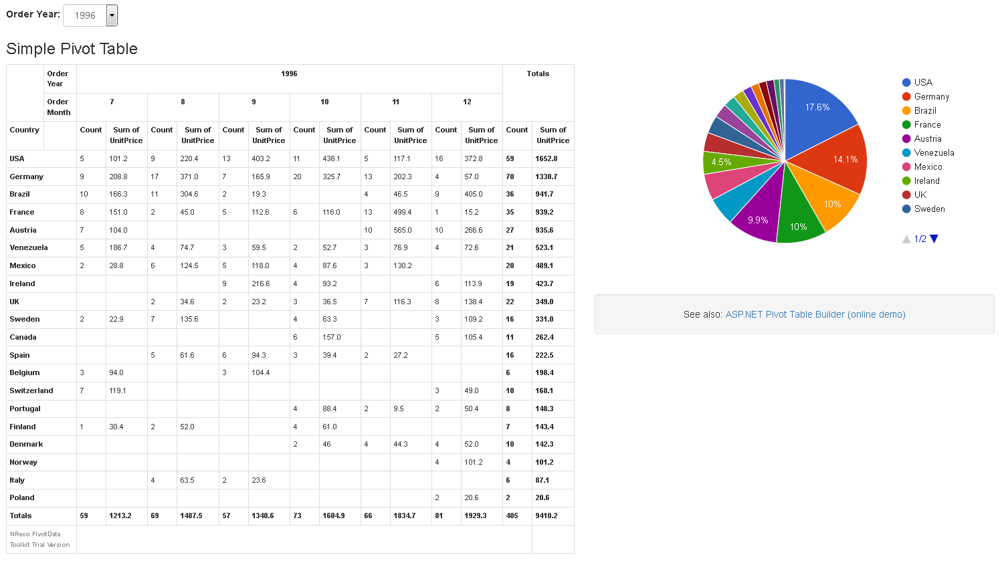

Pivot tables (crosstabs) are good for visualization of aggregated data; unlike usual data grids that just display tabular datasets, pivot table columns and rows are calculated dynamically by grouping of input data and table values are results of aggregation function: sum, average, count etc.
Usually users have to export a dataset from their business applications and build pivot tables by themselves with Excel, or use expensive heavy-weight reporting solutions based on OLAP servers. This example provides an alternative
to get highly customizable built-in business intelligence and reporting functionality embedded directly into ASP.NET application.
This example uses well-known 'northwind' database (SQLite) as data source for the pivot table. NReco PivotData SDK (NReco.PivotData.dll, NReco.PivotData.Extensions.dll) is used for calculation of in-memory data cube by 'Order Details' table, rendering pivot table to HTML and preparation of JSON pivot data for Google Charts. Also simple drop-down based filter is added to illustrate how report output may be customized by end-user:

Online demo: http://pivottable.nrecosite.com/ToolkitPivot/Index
The following code illustrates how to build
in-memory data cube by ADO.NET data reader:
// lets assume this is initalized command with select query
SQLiteCommand selectCmd;
var dbCmdSource = new DbCommandSource(selectCmd);
// lets define derived fields for 'OrderDate' to get separate 'Year' and 'Month'
var derivedValSource = new DerivedValueSource(dbCmdSource);
derivedValSource.Register("Order Year", new DatePartValue("OrderDate").YearHandler );
derivedValSource.Register("Order Month", new DatePartValue("OrderDate").MonthNumberHandler );
var pvtData = new PivotData(new[]{"Country","Order Year","Order Month"},
// lets define 2 measures: count and sum of UnitPrice
new CompositeAggregatorFactory(
new CountAggregatorFactory(),
new SumAggregatorFactory("UnitPrice")
) );
pvtData.ProcessData(derivedValSource);
// lets assume this is initalized command with select query SQLiteCommand selectCmd; var dbCmdSource = new DbCommandSource(selectCmd); // lets define derived fields for 'OrderDate' to get separate 'Year' and 'Month' var derivedValSource = new DerivedValueSource(dbCmdSource); derivedValSource.Register("Order Year", new DatePartValue("OrderDate").YearHandler ); derivedValSource.Register("Order Month", new DatePartValue("OrderDate").MonthNumberHandler ); var pvtData = new PivotData(new[]{"Country","Order Year","Order Month"}, // lets define 2 measures: count and sum of UnitPrice new CompositeAggregatorFactory( new CountAggregatorFactory(), new SumAggregatorFactory("UnitPrice") ) ); pvtData.ProcessData(derivedValSource);
DerivedValueSource used to define additional input data columns on-the-fly; in this case 'Order Year' and 'Order Month' are calculated from 'OrderDate' column. As alternative these values maybe calculated in SQL.
Once we have a data cube it is possible to build pivot table data model with help of PivotTable class:
var filteredPvtData = new SliceQuery(pvtData).Where("Order Year", year).Execute();
// render pivot table HTML
var pvtTbl = new PivotTable(
new[] {"Country"}, // rows
new[] {"Order Year", "Order Month"}, // cols
filteredPvtData
);
// sort by row total
pvtTbl.SortRowKeys(null,
1, // lets order by measure #1 (sum of unit price)
System.ComponentModel.ListSortDirection.Descending);
var filteredPvtData = new SliceQuery(pvtData).Where("Order Year", year).Execute(); // render pivot table HTML var pvtTbl = new PivotTable( new[] {"Country"}, // rowsnew[] {"Order Year", "Order Month"}, // cols filteredPvtData ); // sort by row total pvtTbl.SortRowKeys(null, 1, // lets order by measure #1 (sum of unit price) System.ComponentModel.ListSortDirection.Descending);
SliceQuery class is used for OLAP operations like filtering, slicing etc. For more details see documentation on querying and filtering the data cube.
The following code snippet renders PivotTable model to HTML table:
var strHtmlWr = new StringWriter(); var pvtHtmlWr = new PivotTableHtmlWriter(strHtmlWr); pvtHtmlWr.TableClass = "table table-bordered table-condensed pvtTable"; pvtHtmlWr.Write(pvtTbl); var htmlContent = strHtmlWr.ToString();
var strHtmlWr = new StringWriter(); var pvtHtmlWr = new PivotTableHtmlWriter(strHtmlWr); pvtHtmlWr.TableClass = "table table-bordered table-condensed pvtTable"; pvtHtmlWr.Write(pvtTbl); var htmlContent = strHtmlWr.ToString();
Note that PivotData Toolkit has netstandard builds that may be used with MVC Core applications.